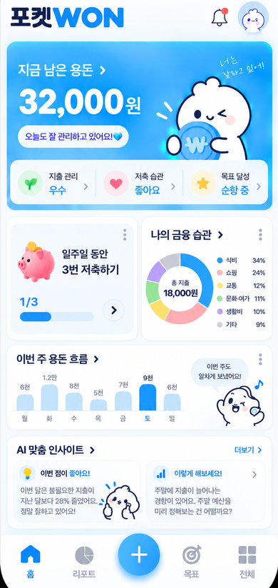
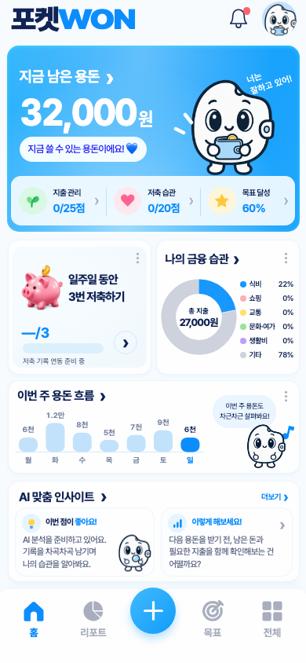
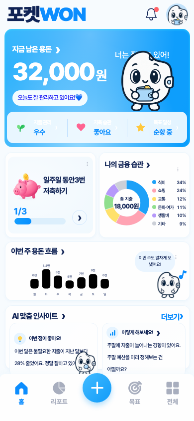
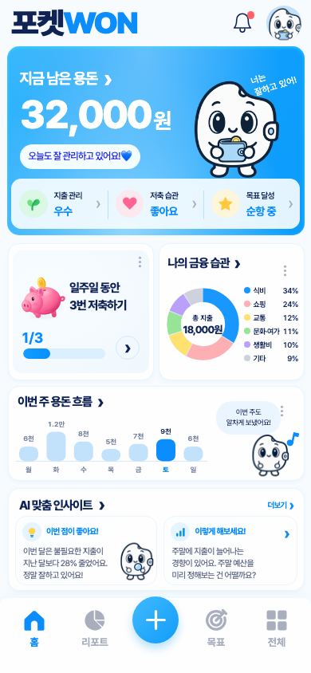
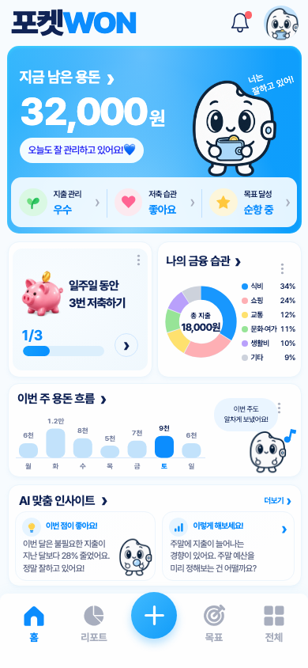
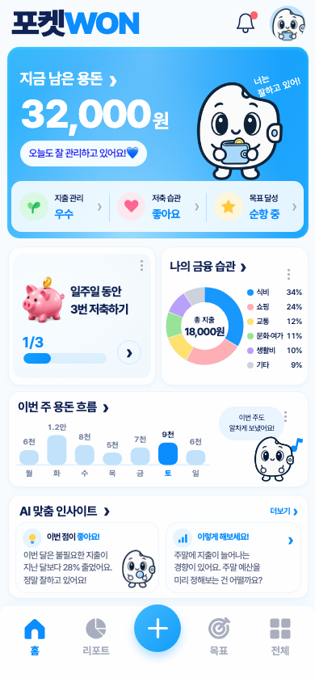

포켓WON Golden Master 비교
기존 캐릭터와 애니메이션을 유지하고, 첨부 이미지의 배치·색상·카드·차트를 실제 앱에 적용했습니다.

746×1577 영역을 폭390px로 환산했습니다. 앱 UI에는 이 이미지를 사용하지 않습니다.
32,000원·18,000원·1/3·AI 예시 문구는 격리된 테스트에서만 주입했습니다. 기본 앱에 예시를 하드코딩하지 않았습니다.

격리된 저장 거래를 집계한 결과입니다. 사용자 저장소를 읽거나 변경한 캡처가 아닙니다. 저축 횟수·AI는 미연동 상태를 표시합니다.
직접 겹쳐 보기
주요 경계 오차 < 0.1px
390×844 기준 Hero·상태 패널·두 카드·주간 흐름·AI·내비게이션의 계측 경계를 비교했습니다.
- 레이아웃 좌표 검증과 캐릭터 전체 프레임 충돌 검증을 분리했습니다.
- 배경·카드·파랑·네이비·파스텔을 이미지 픽셀에서 샘플링했습니다.
- 6회 보정과 최종 캡처를 남겼습니다.
- 픽셀 RGB 지표와 육안 평가 점수는 서로 다른 지표입니다.
남은 차이: 원본 이미지의 글꼴·광택·질감, 새 돼지 일러스트의 세부 모양, 기존 캐릭터의 외형. 실제 차트는 금액 비율에 맞게 그리므로 원본 그림의 비례가 부정확한 부분까지 따라가지 않습니다.
차이 영상 보기 · 나란히 비교 · 빈 저장 상태


시각 보정 기록










검증일 2026-10-04 · 로컬 구현과 배포 미러 동기화 · 공개 배포 없음